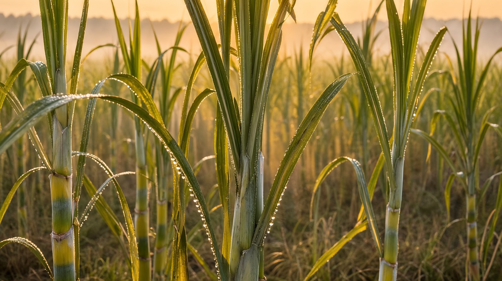
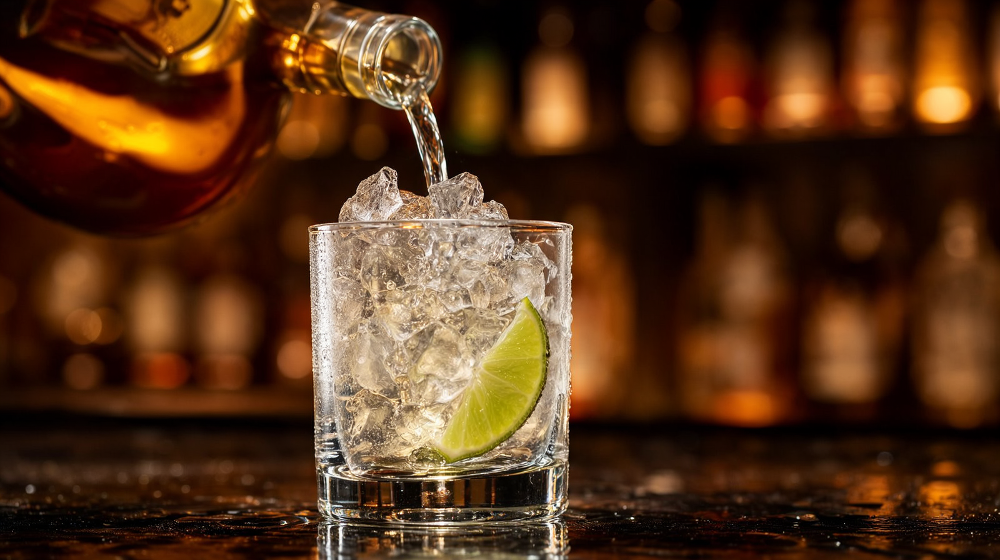
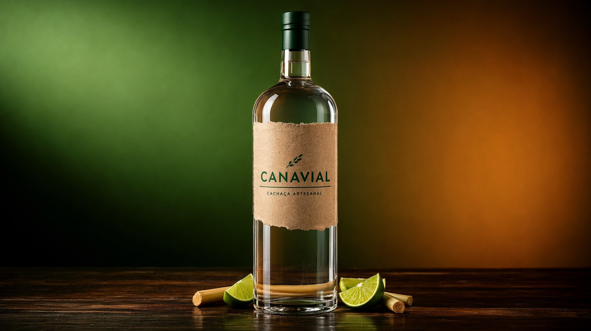
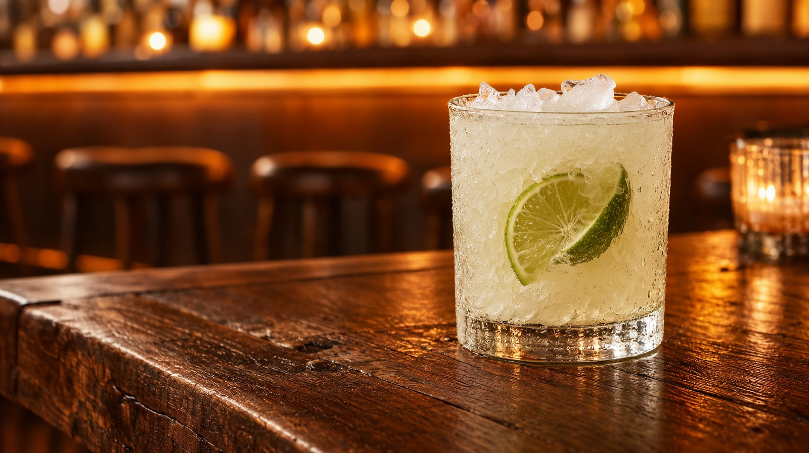
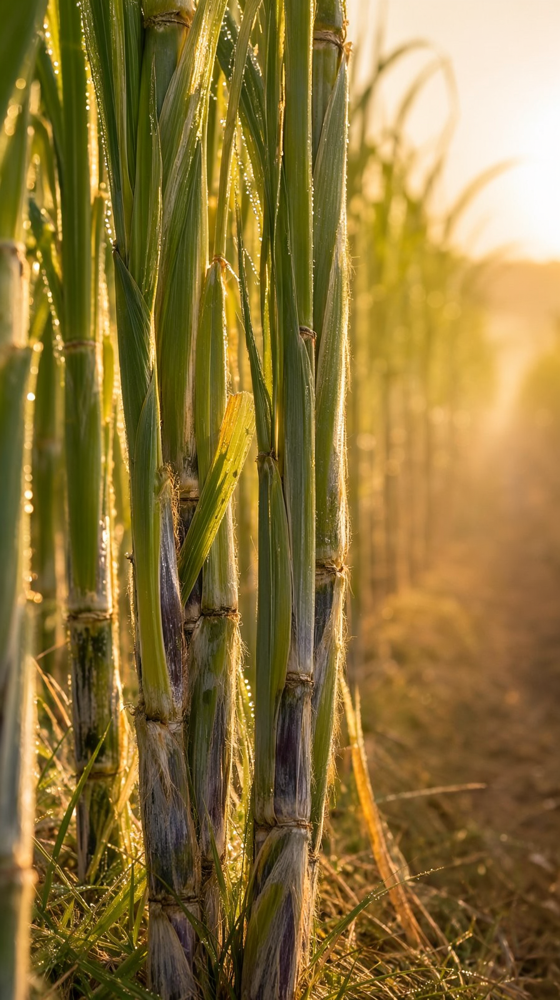
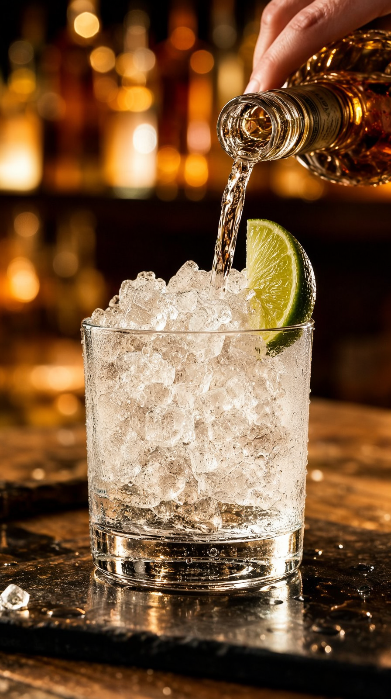
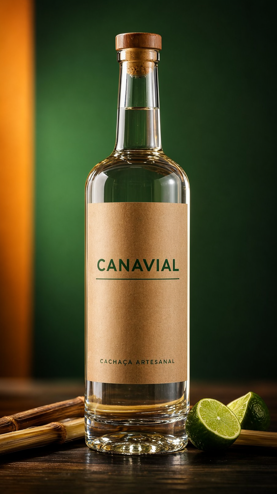
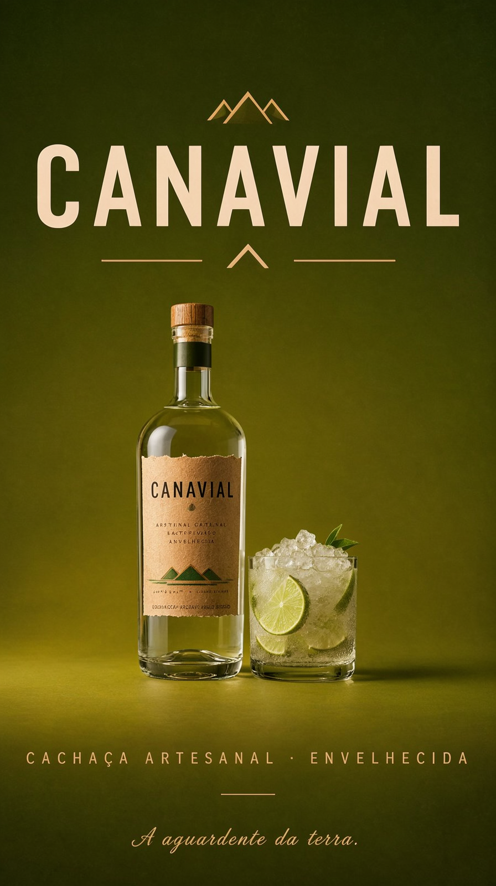

A v7 transforma o comercial em kit de mídia: master 16:9 e master 9:16 vertical nativa (1080×1920, formato reels/shorts — testado e aprovado a 9/10), versão com jingle, e loudness normalizado em −14 LUFS como delivery profissional. Produto novo: CANAVIAL, cachaça artesanal.
O kit · 20 s · 48 fps · som normalizado
loudnorm I=-14:TP=-1.5
— o padrão de loudness de YouTube/Instagram. Com locução, o master fica pronto para publicar.







A jornada
| v1 | v2 | v3 | v4 | v5 | v6 | v7 | |
|---|---|---|---|---|---|---|---|
| Produto | Perfume | Café | Cerveja | Mel | Chocolate | Vinho | Cachaça |
| Formatos | 16:9 | 16:9 | 16:9 | 16:9 | 16:9 | 16:9 | 16:9 + 9:16 + jingle |
| Resolução | 480p↑ | mista | mista | 704p | 1080p | 1080p | 1080p (2ª orientação) |
| Áudio | ambiência | ambiência | trilha | +música | +jingle | +locução | +LUFS −14 |